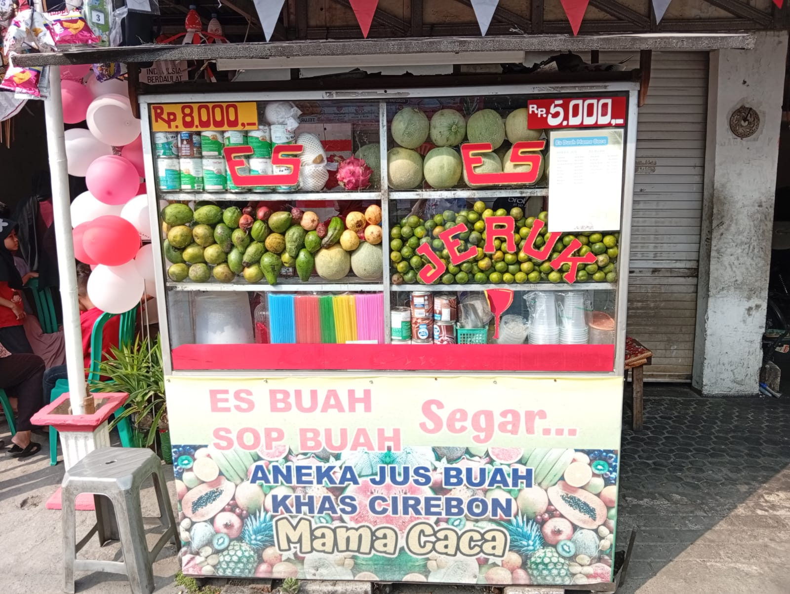
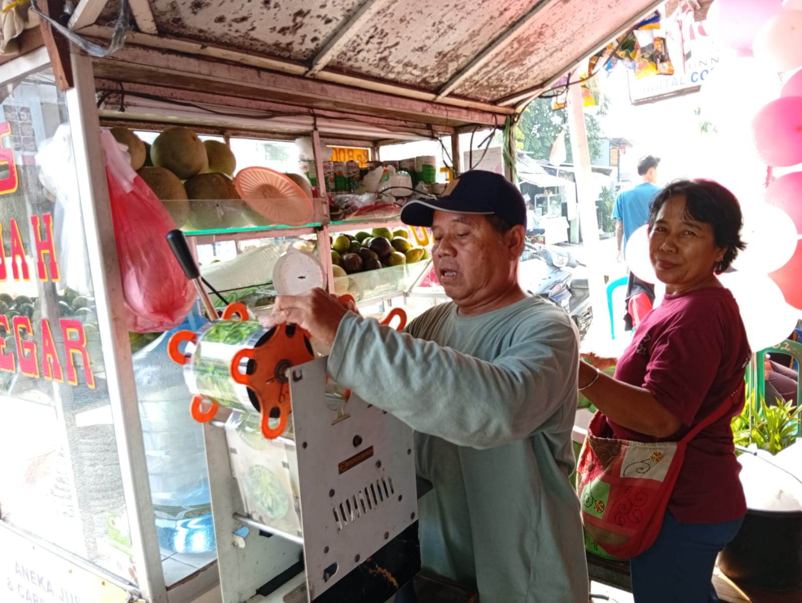
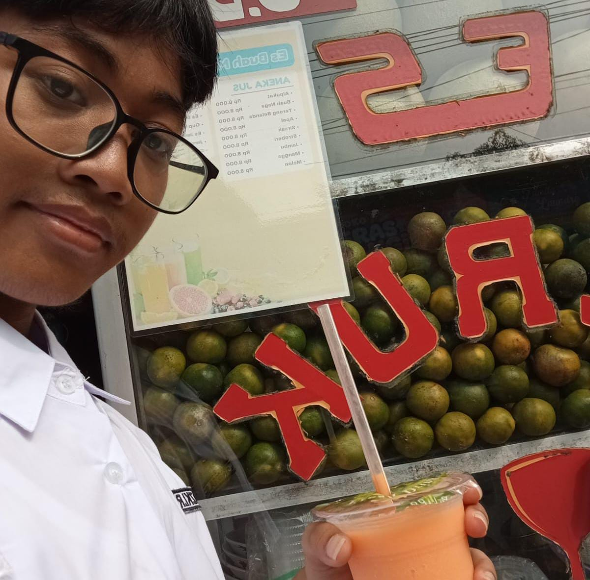

Jus Buah Mama Caca merupakan salah satu usaha yang menjual minuman segar yang berlokasi di Jl. Haji Iming, Beji. Usaha ini dinamakan Mama Caca karena pemilik sekaligus penjualnya adalah seorang ibu yang memiliki seorang anak bernama Caca. Berdiri sejak kurang lebih 15 tahun yang lalu, usaha ini telah lama menjadi bagian dari usaha lokal yang konsisten melayani para pelanggan di kawasan tersebut. Tempat usaha ini buka setiap hari mulai pukul 09.00 pagi hingga pukul 09.00 malam.
Buah-buahan disini selalu dijaga kesegarannya demi mempertahankan kualitas rasa minuman. Berbagai macam buah-buahan segar seperti alpukat, mangga, jambu, dan jeruk ditata rapi di atas meja etalase kaca depan kedai. Buah-buahan ini dipilih langsung dalam tingkat kematangan yang pas, tanpa menggunakan bahan pengawet buatan, sehingga kandungan vitamin alami di dalamnya tetap terjaga dengan baik bagi kesehatan tubuh konsumen.

Dalam menjalankan kegiatan operasionalnya sehari-hari, Mama Caca menggunakan berbagai macam alat dan bahan untuk menghasilkan jus yang berkualitas. Bahan-bahan utama yang digunakan meliputi aneka buah-buahan segar pilihan serta es batu. Sementara itu, peralatan yang disiapkan di tempat usaha mencakup mesin blender, alat pemeras buah, termos es, serta alat untuk pengemasan seperti gelas plastik dan tutup kapsiler untuk memastikan minuman tersaji secara higienis dan praktis.
Alat-alat tersebut ditata di atas meja kerja untuk mempercepat proses penyajian pesanan. Mesin blender listrik selalu siap dioperasikan bersama dengan alat pemeras khusus jeruk. Ada juga sebuah termos es berukuran besar menjaga suhu es batu tetap padat dan dingin. Seluruh proses pembuatan mulai dari pengupasan, pemotongan buah, hingga pencampuran dilakukan secara langsung di hadapan pembeli, memberikan kesan higienis dan transparan.
Pengemasan produk juga mendapat perhatian khusus untuk memastikan kenyamanan pelanggan saat membawa pulang minuman. Usaha ini menggunakan gelas plastik transparan yang dipadukan dengan tutup kapsiler plastic yang disegel menggunakan mesin khusus agar cairan jus tidak mudah tumpah. Desain kemasan yang praktis membuat jus ini sangat mudah dinikmati kapan saja, baik langsung di tempat maupun dibawa saat sedang dalam perjalanan.

Menu yang ditawarkan juga cukup bervariasi dengan menggunakan buah-buahan segar sebagai bahan dasarnya. Di antara sekian banyaknya varian rasa yang tersedia, terdapat dua jenis jus buah yang paling banyak dicari dan menjadi favorit utama para pembeli, yaitu jus alpukat dan jus mangga. Jus alpukat diminati karena teksturnya yang kental dan mengenyangkan, sedangkan jus mangga sangat digemari karena cita rasanya yang manis dan menyegarkan.
Secara keseluruhan, Usaha Jus Buah Mama Caca merupakan contoh usaha yang mampu bertahan hingga belasan tahun berkat ketekunan pemiliknya. Dengan menyajikan buah-buahan segar menggunakan peralatan yang memadai, usaha ini terus diminati oleh masyarakat sekitar sebagai tempat mencari minuman yang sehat dan menyegarkan. Tidak hanya memberi manfaat kepada penjualnya, usaha ini juga memberi manfaat kepada masyarakat lain dengan memberikan jus buah yang sehat.